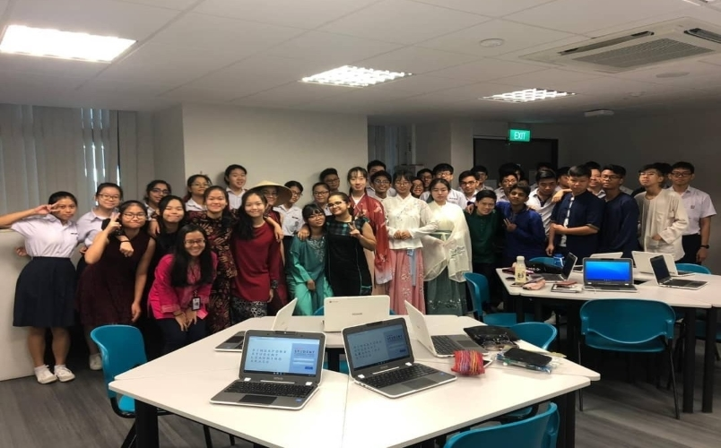
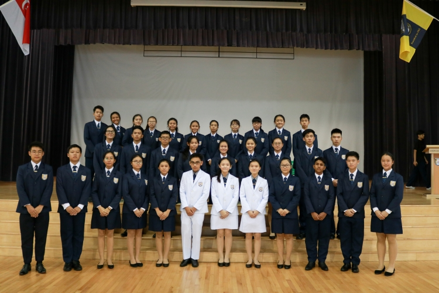
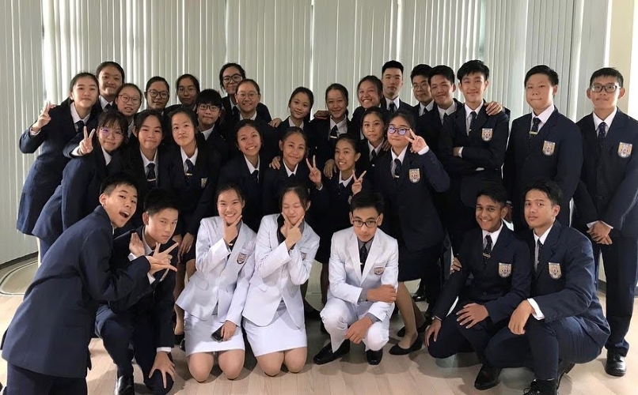
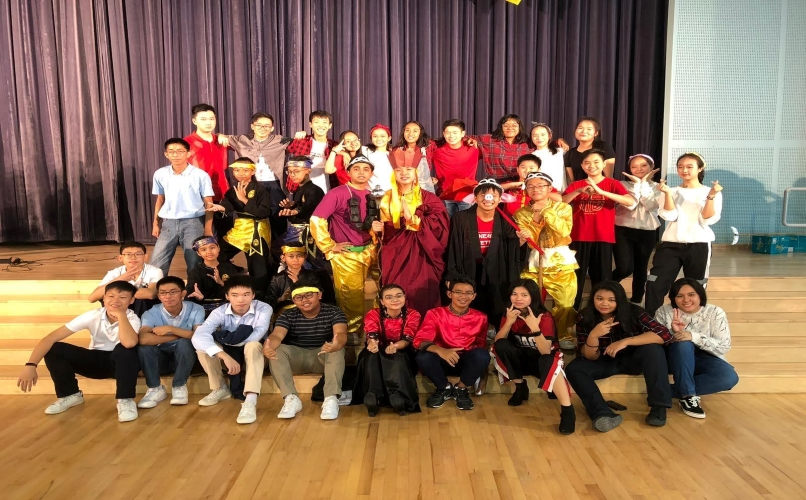
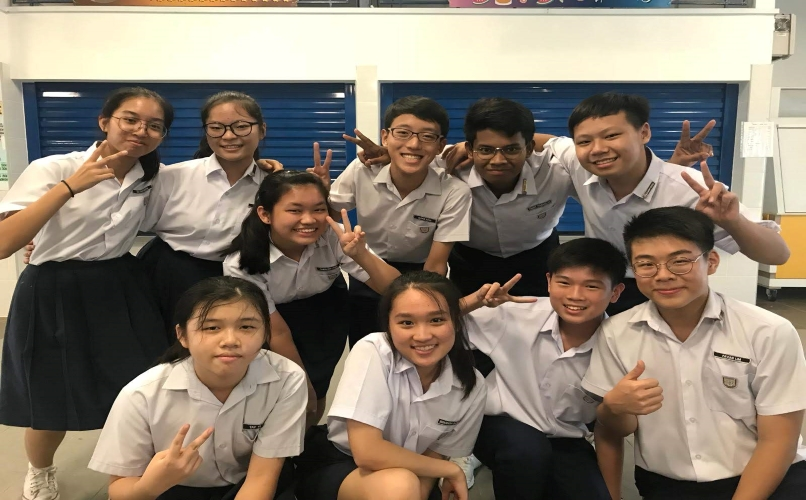
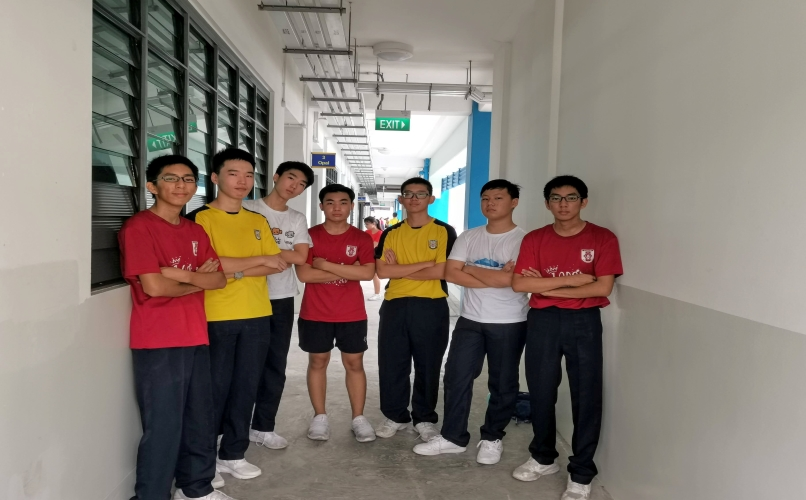
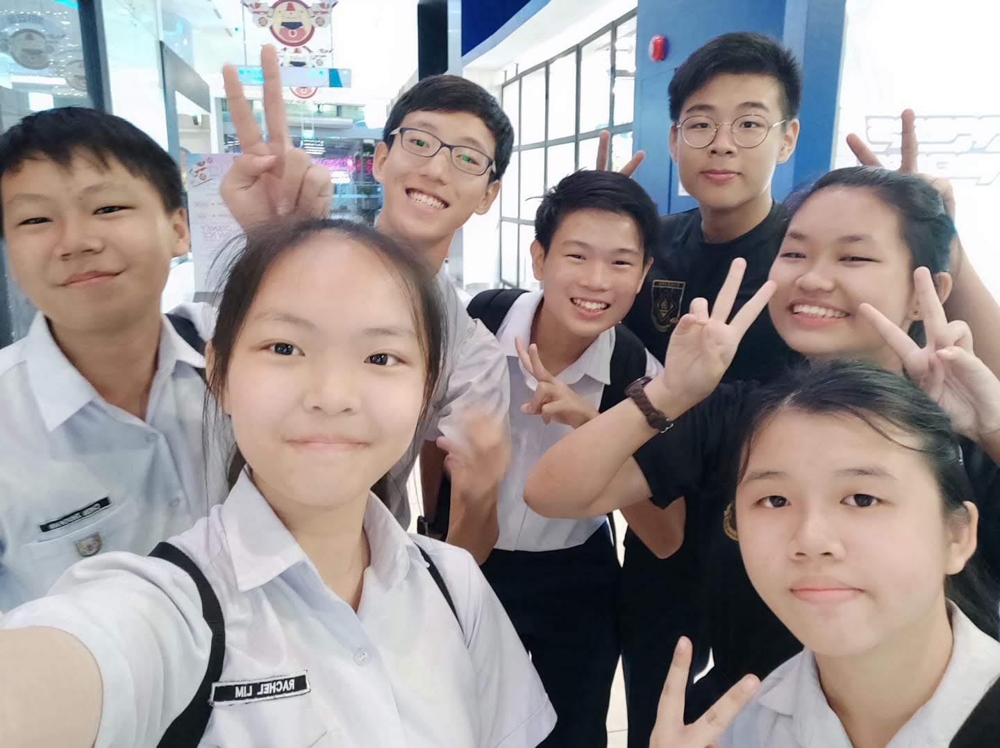
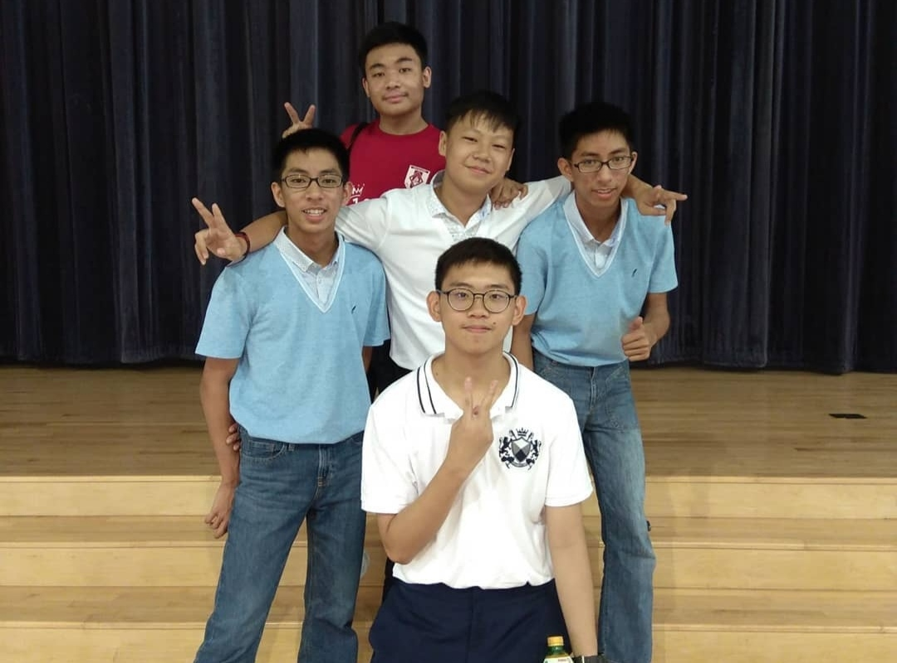
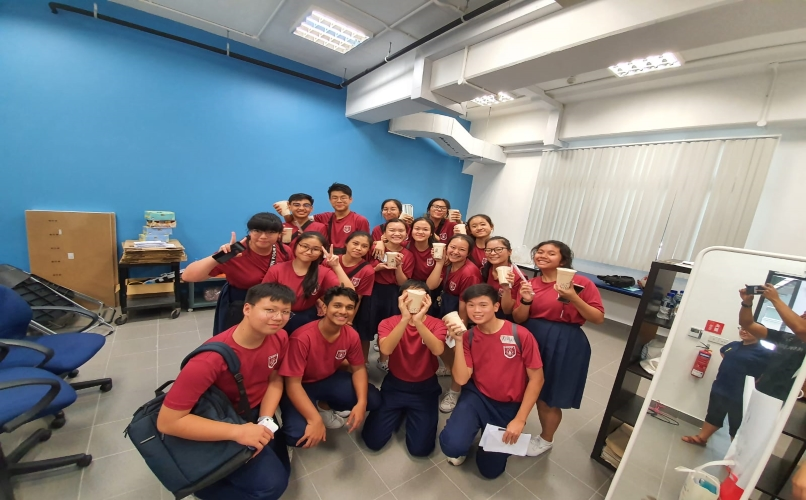

Secondary One Orientation Programme 2019

3 Opal Racial Harmony Day 2019

15th Student Council Investiture 2019

15th Student Council Investiture 2019
Chinese New Year Celebration Performance 2019

Chinese New Year Celebration Performance 2019

Secondary One Orientation Programme 2019
Secondary One Orientation Programme 2019
Organising Committee

National Day Celebration 2020

Dinner of Meet The Parent Session 2020

Chinese New Year Celebration Performance 2019

Student Leader Training Camp 2020
Student Leader Training Camp 2020
Facilitator Committee
Secondary School Experience
Swipe to know more

 ZhuoFan
Now
ZhuoFan
Now